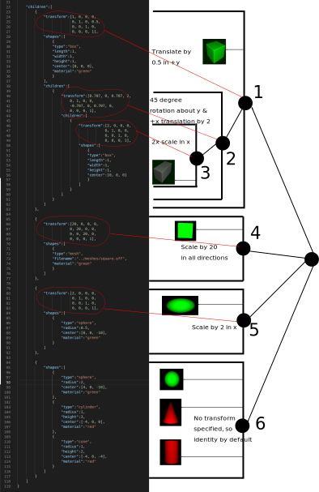
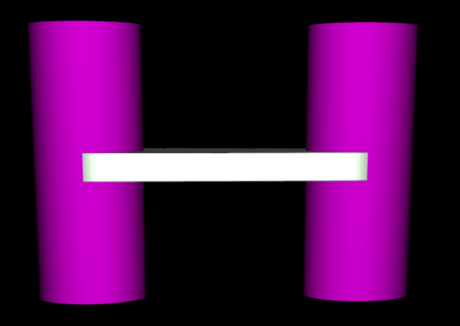
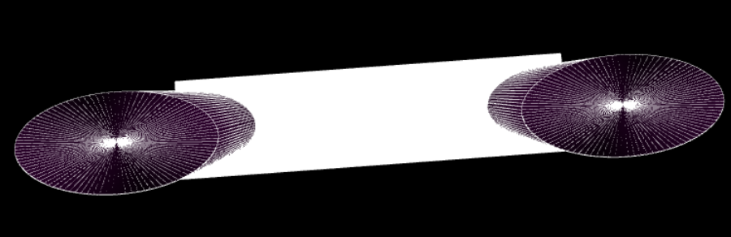

Mini Assignment 2: Scene Graphs (20 Points)
Due Sunday 9/22/2019 at 11:59PM
Click here to see the art contest results!
Overview
The purpose of this assignment is to familiarize students with the JSON-based scene file format we will be using in the ray tracing assignment. In particular, students will be making a variety of scenes to test their knowledge of scene graphs and of 4x4 transformation matrices. The assignment will culminate in the first art contest of our class, in which students design their own scenes out of the basic building blocks that exist in the engine.
Getting Started
You will be writing a series of JSON scene files in this assignment. It is possible to everything (except for possibly the art contest) by writing and uploading your scene files to the scene viewer from the course web site. However, for the art contest and also to prepare for future assignments in this class, you will need to run some code from a local web server on your computer to prevent Cross-Origin Errors form happening when the engine loads shaders and other resources. To get this setup, please follow the instructions below.
-
Clone or download the ggslac repository, which contians an engine that Dr. Tralie made for this class, and which you will be using to render and interact with scene files.
-
Local Web Server
Download and install Python on your machine if you don't already have it. If you are installing Python for the first time, it is recommended that you use Python 3.7 from Anaconda. Once you have Python installed, open up your console and navigate to the root of theggslacdirectory. Then type
Or if you have Python 2 as your default Python installation (God help you), typepython -m http.serverpython -m SimpleHTTPServerBy default, this will provide access to your code on port 8000 on your local machine, so you would go to the link http://127.0.0.1:8000/ to run your code. Please post on Microsoft Teams if you are having trouble with this
-
Navigate to the
viewers/SceneViewer.htmlfile. This will launch the interface from which you can load your scene files.
Submission Instructions
You will submit all of your scene files to Canvas when you are finished. Please also submit aREADME.txt file with both submissions with the following information each time:
- Your name
- One of the two statements below
- "I consent to have my art contest submission posted publicly on the class web site. My name/pseudonym for public display is .
- "I do not wish to post my art contest submission publicly"
- A one or two sentence description of your art contest submission.
- Approximately how many hours it took you to finish this assignment (I will not judge you for this at all...I am simply using it to gauge if the assignments are too easy or hard)
- Your overall impression of the assignment. Did you love it, hate it, or were you neutral? One word answers are fine, but if you have any suggestions for the future let me know.
- Any other concerns that you have.
JSON Scene File Syntax
The scene files are written in JSON syntax, and they specify a tree structure. Each node in the tree has the following three fields- transform:
Every node in the scene graph has a 4x4 transform matrix associated to it, which describes where to place it relative to its parent's coordinate system. The entire subtree will be transformed by this matrix on the left. If no matrix is provided, the identity matrix is assumed
-
shapes:
Every node can contain a set of shapes (if this field is not specified, then there are no shapes, and this is a "dummy node"). The possible shapes, with their possible additional parameters, are described below:
- box, with parameters "width" (number), "height" (number), "length" (number) and "center" (list of 3 numbers xyz). The default box is 1x1x1, centered at (0, 0, 0)
- polygon, with a single parameter "vertices", which is a list of 3-element lists, each of which is a vertex on the polygon. Vertices are specified in CCW order with respect to the polygon normal.
- cylinder, with parameters "radius" (number), "height" (number), and "center" (list of 3 numbers xyz). The default cylinder has radius 1 and height 1, centered at (0, 0, 0).
- cone, with parameters "radius" (number), "height" (number), and "center" (list of 3 numbers xyz). The default cone has radius 1 and height 1, with its base centered on (0, 0, 0).
- sphere, with parameters "radius" (number) and "center" (list of 3 numbers xyz). The default sphere has radius 1 and is centered at (0, 0, 0).
- mesh, with parameter "filename" (string), which is a path to the triangle mesh stored as a .off file. The path is relative to the directory from which the viewer is being run.
- scene, with parameter "filename" (string), which is a path to another JSON scene file, which should be recursively included as a child of this node. The path is relative to the directory from which the viewer is being run.
Note that each shape also has a "material" field, which points to a material defined at the top of the JSON file
-
children:
Every node can have a list of children, which is a list of other nodes that are included below it in the tree. If no list is provided, then this node doesn't have any children, and it is a "leaf node."
- Node 2 is a "dummy node," as it has no shapes associated to it; it only has a transformation (45 degree rotation about y and a translation by 2 in the +x direction). So it is merely used to transform the shapes below it, not to include any shapes of its own.
- Node 3 contains a unit cube, which it scales by 2x in the x direction to turn it into a 2x1x1 rectangular prism. To further continue up the tree to world coordinates, it is then rotated by 45 degrees about y, translated by 2 in +x, and translated by 0.5 in +y. (Note that flipping the rotation in node 2 with the scale in node 3 would actually end up shearing the shape).
- Nodes 3, 4, 5, and 6 are all "leaf nodes," as they have no children, so the tree stops there.
- Node 6 actually contains 3 shapes, but no transformation is specified, so the identity matrix is assumed for all of them. To place the shapes at different positions and to scale them in different directions, we actually rely on the shape parameters (center, radius, height) instead of transformation matrices. Though one could accomplish the translation and scaling with a matrix as well.

Other Tips:
- It is recommended that you include tabs consistently to help you see what nodes are at the same depth in the tree.
- Be sure to use double quotes for all fields, as per the JSON spec! You will receive an alert popup if you have improperly formatted JSON. You should use Microsoft Visual Studio Code or some other editor that recognizes the .json extension to help you with the syntax.
Scenes To Create
Below are scenes that you will create.
Task 1: Positioning Camera (2 pts)
Modify the first camera in sample.scene.json so that it is looking from overhead by default when loaded. Make it so that the cylinder and cone are to the left, the two boxes are to the right, and nothing else is in view, as shown below (no need to get it exact, but get as close as you can). Save as a file called overhead.json, which you will submit. (Hint: expand the cameras menu to see the position and rotation of the camera)
Scene 2: Recursive Inclusion (3 pts)
Create a scene file called recursive.json that recursively includes sample-scene.json twice: once at its original position, and another time at exactly 20 units above its original position. Be sure that the path to sample-scene.json is relative to where SceneViewer.html is being run! In particular, if you don't move SceneViewer.html, then the path should be ../scenes/sample-scene.json. If this works properly, you should see something like below:
Scene 3: Rotated Boxes (5 pts)
Create a scene called boxes.json that contains one box directly on top of one another. The box on top should have half the width/length/height of the box on the bottom, and it should be rotated 45 degrees. The picture below shows what the final result should look like:
- The second box should be rotated about the y-axis.
Scene 4: Toy Bridge (5 pts)
Create a scene with two ellipsoidal cylinders and a rectangular box between them that looks like a simple bridge. Specifically, you should do the following- Create two cylinders with ellipsoidal cross-sections. The semi-major axis should be 0.4, and the semi-minor axis should be 0.2.
- The cylinders should each be 2 units tall, and their centers should be 2 units apart along the semi-major axis.
- You should place a box which extends from the center of one to the center of the other, and which is much thinner than it is wide.
See the picture below for two different views of this (don't worry about the colors)
Front View
Top View
Scene 5: Art Contest! (5 pts)
Design your own scene, making creative use of the components available to you in the engine. The winner of the art contest will receive 5 extra credit points. The judges will be me and the other professors in Math/CS, with the names anonymized during judging. To receive full credit, you must satisfy the following parameters:- The submission should include at least two scene files, with one included in the other
- The scene graph must have a depth of at least two somewhere (one child of a child)